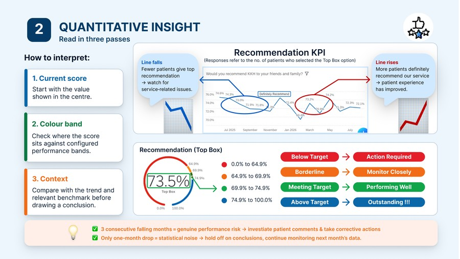
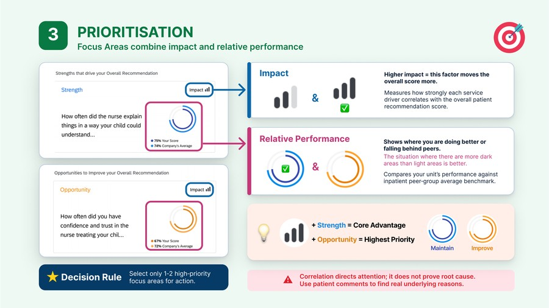
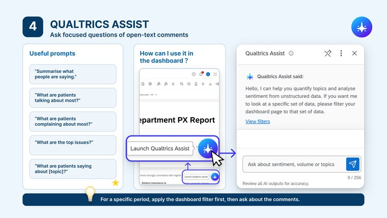
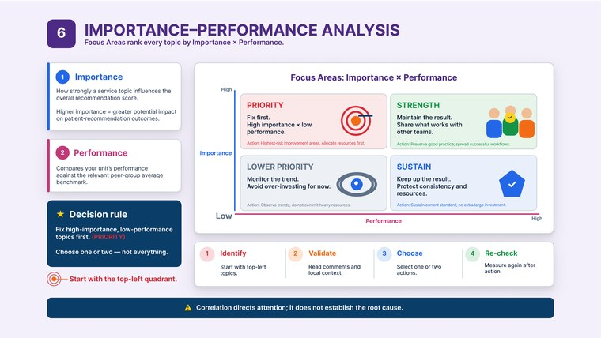
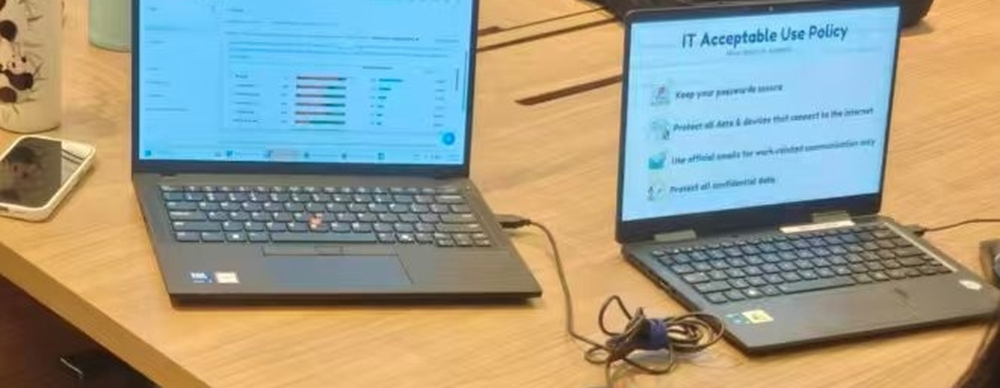
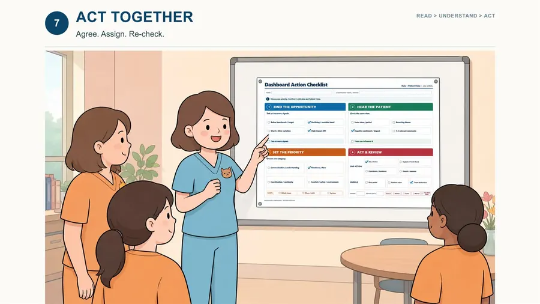

KKH Women's and Children's Hospital
Multi-metric patient experience dashboard
Getting one set of survey data nobody finished reading into a five-minute morning meeting.
The problem is not collecting, it is reading
Patient-reported experience measures (PREMs) come back weekly as a batch of surveys and get rolled up into metrics. The data was always there. Nobody was reading it — the real workflow on the ward is paper: what gets opened at the morning meeting is a printed sheet, not a screen.
What I had to build was not another better report. It was turning that batch of data into "what do we do first today" in five minutes.
Four constraints (none of them mine to set)
- The two views want different things. Management reads trend and drivers; the nurse manager reads which two things this shift should watch. Same numbers, two ways of reading them.
- One screen, a few minutes. The morning meeting is five minutes. You cannot ask anyone to learn a new tool first.
- The real workflow is paper. What gets spread out on the ward is a printed sheet. The screen version has to give way to the paper version.
- No individual data. Only operational-level aggregates; no single patient's record was visible.
My role
Research (two one-to-one interviews: management 34 minutes, nurse manager 54 minutes, four days apart), architecture (collapsing multiple metrics into one path), interface (four-view toolkit site + eight-page guide), build (framework-free single-file front end). The toolkit site, the storyboard and the five plans are mine; the Resource Guide and Checklist were done with the four-person team; the hospital handled requirement sign-off and compliance review.

Two views, not two sets of requirements
On the same project, management wants less and the nurse manager wants to scan it at a glance. They look contradictory, and this is the moment a designer most easily gets wrong: the instinct is to prioritise requirements.
Three layers are not three interfaces, they are three ways of reading
| Situation | Who is looking | The form they get |
|---|---|---|
| Read results | Management: where the week is heading overall, and what is driving it | One trend + three core concepts, no interaction |
| Read execution | Nurse manager: scan the whole first, then drill into the outlier | One list, printable |
| Read sources | A layer I added: what is this number based on | Expandable sources, kept off the main screen |
Both people said "I want a page where I can see the data", but one wanted a sentence and the other wanted two things. Compress those into one screen and you get the report nobody is happy with. The third layer, "read sources", has no interview quote, and no doctor was interviewed — it comes from my own read of where the PI/QI loop breaks, not from a participant's request.
From a dozen metrics to three numbers
The first version put every metric up, and one screen was stuffed with charts. It is the most typical wrong assumption I have made: more complete information → better judgement.
Three standards for the three numbers that stay
Not "pick the three most important". Every number that stays has to meet all three at once; miss one and it sinks:
| Condition | Meaning |
|---|---|
| Carries direction | Up or down, never neutral — a neutral number produces no action |
| Carries an object | Which ward, which metric — not just "overall" |
| Carries a next step | Act or not, and where — you know what to do after reading it |
Counter-example
"Discharge instructions are below target." — that sentence only restates a status. It does not say up or down, and does not say where to act. The reader still has to judge, which means no design was done.
The replacement sentence is: "Of the three metrics, only discharge instructions is heading down; the rest are flat." Same fact, but it carries direction, an object, and hints at the next step.
Four things cut from the first screen
- Donut progress charts. The readout needs converting, and nobody converts in five minutes.
- Year-on-year / month-on-month dual axis. Put two lines together and the emphasis averages out.
- Verbatim quotes straight onto the first screen. A single sentence lands hard, but points nowhere.
- The leadership "overview". A different job from "what do we do today"; it moved down to the second layer.
Nothing was deleted, everything was layered — all four are still in the system, they just no longer compete for the first screen.
I did not rebuild the dashboard, I built a translation layer
The dashboard is the hospital's existing system. Touching it means touching how they are measured — the hospital said explicitly not to change it. So what I delivered was the layer around it: eight pages on "how to read this screen, and what to do after reading it", usable by any department.



Set the filters first
Three passes

Only one or two

Sentences for the AI

Themes are only leads

Importance × performance

Four steps, printable
The eight-page guide and the four-step checklist were done with the four-person team; my part is in the role line of the next section.

The eight pages are numbered in one order: read first, then understand, then act. Each section answers one question, and you only move down once it is answered.
| Section | Question it answers | Design intent |
|---|---|---|
| Read | How is today overall, and which item went wrong. | No mental arithmetic: the page order is the priority order. |
| Understand | Why this item went wrong, against whom and against last week. | Three references for the same metric: target line / peer average / its own last week. |
| Act | This shift, who does what and when. | Not buttons — four cells with an owner and a time. |
It has to be printable
The toolkit site was done, and I thought delivery was done. What was actually true: what she needed was something she could hold — what gets spread out at the morning meeting is paper.
The three pieces
| Piece | Size | In one line |
|---|---|---|
| Resource Guide | 8 pages | Seven sections plus a cover: scope → readout → ranking → asking → verbatim → positioning → checklist (done with the team) |
| Checklist | 4 steps | Read → understand → act → 30-day review, with an owner and a pass condition (done with the team) |
| Storyboard | 7 frames | From opening it to taking action, in seven frames |
The three pieces are not a deliverable list. They are what lets the hospital's people keep using this after I left.
Five plans, and why the A5 card moved forward
- Five plans morning-meeting quick-reference card / terminology card / complaint classification guide / control-chart reading guide / modular activity booklet — proposed in parallel, complementary not iterative
- Why A5 what the nurse manager lacks is a sheet of paper she can carry into the meeting, not another system to log into — A5 is a paper size, not a version number
- The medium argument management said in so many words that they did not want a physical card (hundreds of departments means hundreds of copies); the form stayed, the medium became a weekly-generated PDF — that is a trade-off
It got as far as "someone is willing to carry it on". That is not a clinical deployment. This is also the fixed line I use for KKH on my resume and in this portfolio.
Who picks it up
Too much data → acting together
The seven-frame storyboard is for the nurse manager, not for a jury: each frame moves one step, and the last frame is "we act together".



→ Find The Guide
→ Find The Focus
→ Find The Printable Checklist
→ Print It
→ Check It
→ Act Together
Three things I would redo
The biggest risk in this project was not that I did too little. It is that after I finished, there was no second chance to validate it.
- I would run the N=3 usability test earlier, instead of waiting until all five plans had taken shape. Lesson: validation came too late.
- I would get a printed sheet that was actually in use in week one, instead of guessing what the paper version looked like. Lesson: I inferred the constraint instead of observing it.
- I would ask up front who maintains this interface, instead of assuming someone would pick it up. Lesson: I took handover for granted.
- I would run both interviews a second time, instead of settling after one pass each. Lesson: 34 and 54 minutes were enough for the process, not for the resistance, and the sample was two people.
Did I ever say no
On this project I did not turn down a single request. Looking back, that is my biggest gap — I treated "do all of it" as being responsible. Saying no to a request needs three preconditions: someone is asking, you have the right to refuse, and you can carry the consequence. Of the five projects in this book, only KKH met all three — and I did not use it once.
If I did it again, I would move that N=3 test to before the plans took shape.